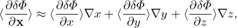

5.5 Comments on how to split the distribution function
In particle simulations, the seemingly trivial thing on how to split the distribution function is often
considered to be a big deal. Separating the perturbed part from the equilibrium part is considered to be
a big deal and got the famous name “δf particle method”, in contrast to the conventional particle
method which is now called full-f particle method. Summarizing the above result, the total distribution
function F is split in the following form:

and only δh is actually evolved by using markers and its moment in the phase-space is evaluated via
Monte-Carlo integration. The blue and red terms in the above expression explicitly depends on the
perturbed field. The velocity integrations of these two terms can be performed analytically. However, in
some cases, the phase space integration of the blue terms must be evaluated using markers, i.e., using
Monte-Carlo method, to avoid the inaccurate cancellation between the integration of these parts and
the integration of δh (the latter is computed using Monte-Carlo method). When will the inaccurate
cancellation is significant depends on the problem being investigated and thus can only be determined
by actual numerical experiments. Many electromagnetic particle simulation experiments
indicate that the parallel current carried by the blue term must be evaluated via Monte-Carlo
method, otherwise inaccurate cancellation between this term and δh will give rise to numerical
instabilities.